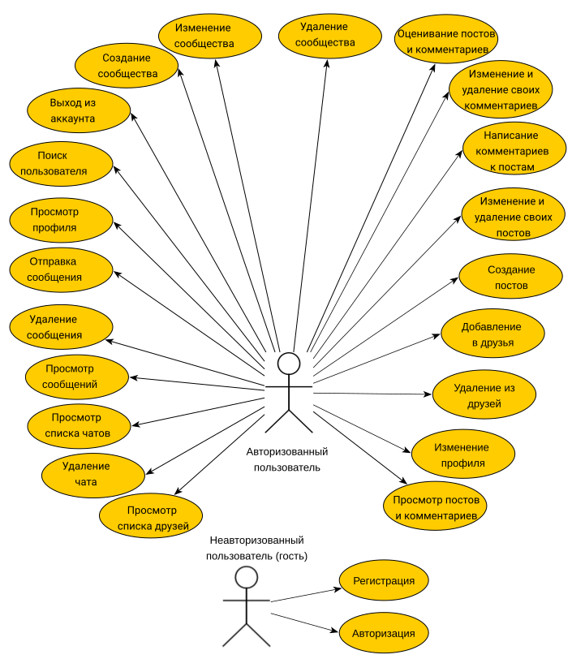
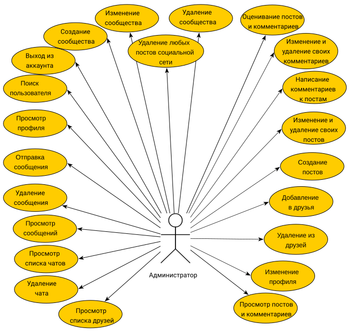
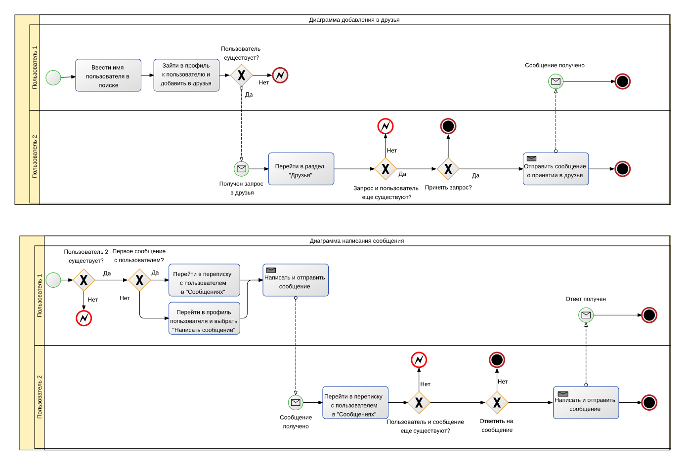
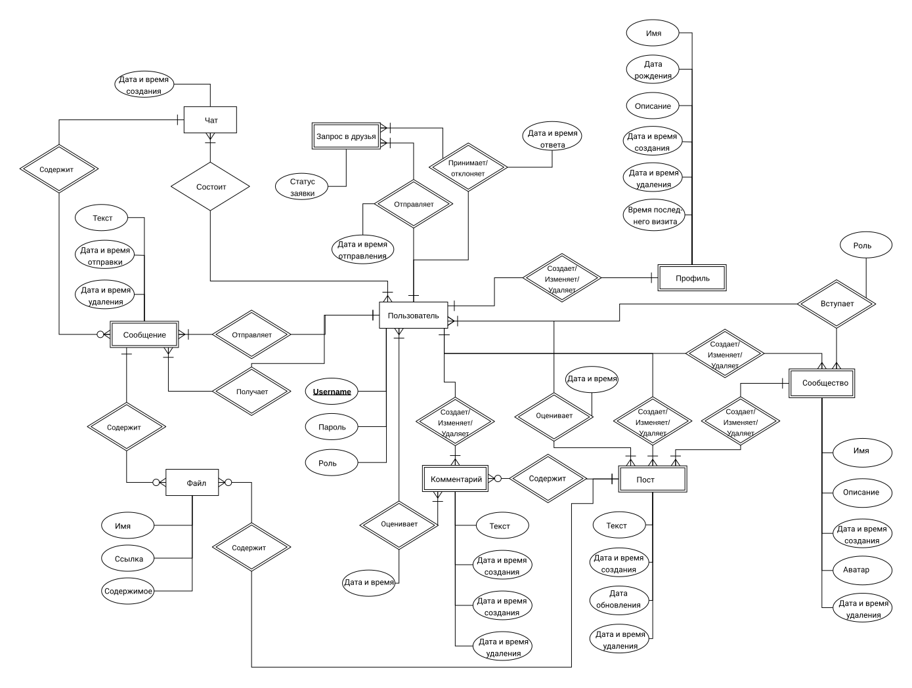

Данный проект направлен на реализацию платформы для
онлайн-взаимодействия пользователей. Пользователи продукта смогут
создавать и редактировать личные профили, добавлять других пользователей
в друзья, писать им сообщения, приватно просмотривать их профиль, а
также создавать сообщества и посты, писать комментарии.
Функциональные требования
Создание и изменение профиля
Авторизация в социальной сети с помощью логина и пароля
Добавление, удаление, изменение постов
Добавление, изменение и удаление комментариев к постам
Просмотр постов своих друзей, а также тех, на кого пользователь
подписан
Просмотр всех постов социальной сети
Добавление и удаление друзей
Написание и удаление сообщений в личной переписке
Создание, изменение, удаление сообществ
Отметка лайком понравившихся постов и комментариев
Use-Case - диаграмма


Формализация ключевых
бизнес-процессов

Пользовательские сценарии
Сценарий добавления в друзья:
Будучи авторизованным пользователем, перейти во вкладку
“Друзья”;
Ввести имя пользователя в строке поиска;
Выбрать один из предложенных вариантов;
Перейти в профиль пользователя и нажать кнопку “Добавить в
друзья”.
Сценарий написания первого сообщения:
Будучи авторизованным пользователем, перейти во вкладку
“Друзья”;
Выбрать пользователя из списка и перейти к нему в профиль;
Нажать на кнопку “Написать сообщение”, перейдя к диалогу с
пользователем;
Ввести текст сообщения и нажать кнопку “Отправить”.
Сценарий изменения информации о себе в профиле:
Будучи авторизованным пользователем, перейти во вкладку
“Профиль”;
Нажать на кнопку “Редактировать”;
В окне редактирования информации о себе ввести новый текст;
Нажать на кнопку “Сохранить изменения”.
Сценарий добавления поста:
Будучи авторизованным пользователем, перейти во вкладку “Профиль”
или “Лента”;
Нажать кнопку “Создать пост”;
Ввести текст поста и при необходимости добавить медиафайлы;
Нажать кнопку “Опубликовать”.
Сценарий изменения поста:
Будучи авторизованным пользователем, перейти к своему посту;
Нажать кнопку “Изменить”;
Внести изменения в текст поста;
Добавить файлы к посту или удалить уже добавленные;
Нажать кнопку “Сохранить изменения”.
Сценарий добавления комментария:
Будучи авторизованным пользователем, выбрать пост для
комментирования;
В поле для комментариев ввести текст;
Нажать кнопку “Отправить”.
Сценарий создания сообщества:
Будучи авторизованным пользователем, перейти во вкладку
“Сообщества”;
Нажать кнопку “Создать сообщество”;
Ввести название и описание сообщества;
Нажать кнопку “Создать”.
ER-диаграмма сущностей

ER диаграмма
Описание
типа приложения и выбранного технологического стека